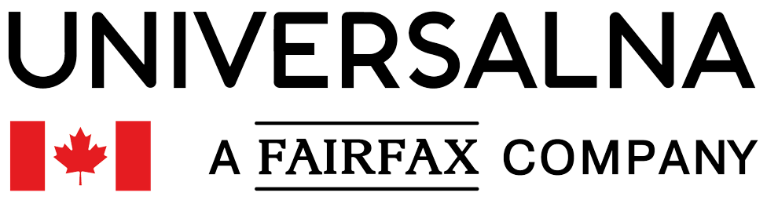
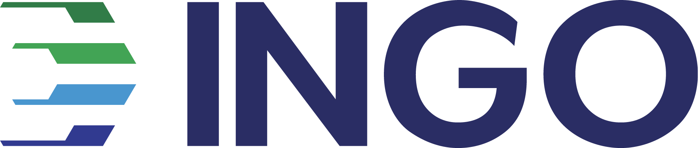
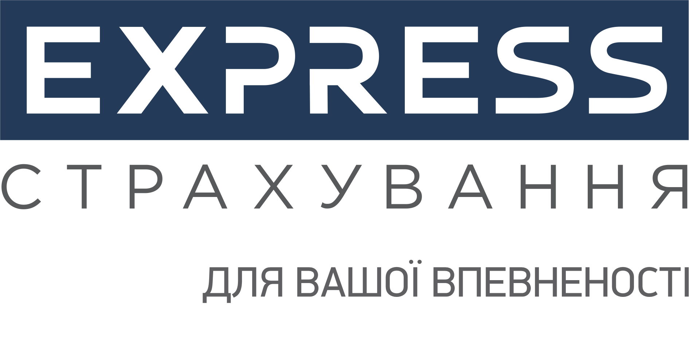

Наші партнери

- 


- 

- 


Ви шукаєте найзручніший і найшвидший спосіб отримати автоцивілку або
зелену карту без зайвої головної болі?
Наш сервіс онлайн
страхування - це рішення, яке заощадить ваш час і кошти. Отримайте
поліс для вашого автомобіля одразу, не виходячи з дому.
Наш сервіс спрощує процес купівлі страхового поліса. Вам потрібно декілька кроків, щоб отримати необхідний документ.
Завдяки онлайн-формі та швидкій обробці даних Ви отримаєте поліс якнайшвидше.
Гарантуємо чинність кожного договору.
Миттєва реєстрація поліса в базі МТСБУ.
Наша команда готова відповісти на всі ваші запитання та надати допомогу в будь-який час.
Ми прагнемо надати найкращий досвід онлайн-купівлі автоцивілки та зеленої карти. Ви зможете отримати необхідний документ швидко та легко. Надійність та зручність - ось наші ключові переваги. Оберіть нас, і отримайте свою страховку онлайн вже зараз!
1
Введіть необхідні дані в форму для розрахунку
2
Оберіть пропозицію страхової компанії
3
Заповніть коротку анкету
4
Сплатіть поліс онлайн і отримайте його на електронну пошту
Перший ексклюзивний продукт медичного страхування з різними програмами та додатковими опціями. Різні пакети та ліміти покриття.

Реалізовані програми страхування життя Нещасний випадок (Стандарт) та Нещасний випадок (Екстрим, з покриттям спортивних змагань та військових ризиків), які допоможуть фінансово захистити сімейний бюджет у разі настання нещасних випадків, Особливо актуально для дітей під час спортивних змагань.
Страхування квартири чи будинку з персональним асистансом, від якого Ви будете в захваті. Обов’язкове фотографування об’єкту. Покриття військових ризиків.
Якщо Вам необхідно заключити договір автоцивілки для юридичної особи.
Зверніться до наших спеціалістів для оформлення.
Міні-КАСКО стає чудовим компромісним варіантом захисту авто, який покриває основний ризик пошкодження при ДТП
Страхування КАСКО - ваш надійний захист від несподіваних витрат у разі аварій, пошкоджень або протиправних дій третіх осіб, а також стихійних явищ. Забезпечте собі спокій та безпеку на дорозі завдяки комплексним страховим рішенням.
Переваги, які ми пропонуємо:
1. Швидке та просте оформлення: Забудьте про витрати часу на
особистий візит до страхової компанії. Наш сервіс дозволяє
вам легко та швидко оформити "Зелену карту" онлайн. Все, що вам
потрібно - це декілька кліків мишкою та декілька хвилин вашого
часу.
2. Підтримка Клієнтів: Наша команда завжди готова
відповісти на ваші питання та надати допомогу під час оформлення. Ми
робимо все можливе, щоб зробити процес легким та зручним для Вас.
3. Послуга 24/7: Ви можете отримати доступ до нашого сервісу в
будь-який час, коли це для вас зручно. Незалежно від вашого
місцезнаходження, ми завжди тут, щоб надати вам необхідну "Зелену
карту".
Як це працює: Заповніть Заявку: Введіть необхідні дані та оберіть
тривалість страховки.
Оплата Онлайн: Здійсніть оплату онлайн,
використовуючи безпечні методи платежу. Отримайте Свою Зелену карту:
Ви отримаєте вашу "Зелену карту" на електронну пошту, готову для
використання.
Нехай ваші подорожі будуть безпечними та зручними. Оформіть "Зелену
карту" онлайн з нашим сервісом та нехай ваша подорож буде безпечною!
Захист себе та інших на дорозі. В Україні кожен власник автомобіля повинен пам'ятати про обов'язкове страхування цивільної відповідальності (ОСЦПВ). Цей страховий поліс є не лише юридичною вимогою, але і гарантією захисту вас та інших учасників дорожнього руху.
ОСЦПВ: Захист у разі ДТП Основна функція обов'язкового страхування цивільної відповідальності полягає в тому, щоб забезпечити компенсацію за завдану шкоду під час дорожньо-транспортної пригоди. Якщо ви є винуватцем ДТП, ваша страхова компанія відшкодує збитки потерпілим. Така система покриття допомагає вирішувати фінансові питання цивілізовано та швидко. За винуватця ДТП компенсацію отримують потерпілі, а не винуватець. ОСЦПВ гарантує, що потерпілі отримають відшкодування на ремонт свого транспорту або лікування, якщо це потрібно.
Вищий захист для водіїв З 1 липня 2022 року в Україні були введені нові страхові суми для ОСЦПВ. Тепер виплата виглядає так: За шкоду, заподіяну життю та здоров'ю: 320 000 грн на одного потерпілого, незалежно від кількості потерпілих. За шкоду, заподіяну майну: 160 000 грн на одного потерпілого, але не більше 800 000 грн на одну страхову подію. Ці нові страхові суми гарантують вищий рівень захисту водіїв та пішоходів.
Швидко, зручно, доступно Однією з найбільших переваг є онлайн-оформлення ОСЦПВ. Це дозволяє оформити поліс зі зручності свого дому або офісу без зайвих витрат часу. Завдяки цьому ви можете отримати захист у найшвидший спосіб. Переваги онлайн-оформлення автоцивілки
Ви можете оформити автоцивілку онлайн в будь-який час, день чи ніч, у будь-який день тижня. Електронний поліс: Ваш поліс автоматично надсилається на вашу електронну пошту після оплати, і ви завжди можете мати його під рукою. Економія коштів: Електронний поліс зазвичай дешевший, ніж паперовий, і дозволяє зекономити до 10% від вартості страховки.
Електронний поліс завжди з вами, ви не можете його загубити чи залишити вдома. Як швидко оформити автоцивілку онлайн: Розрахунок індивідуальної вартості: Використовуйте калькулятор автоцивілки, щоб розрахувати вартість страховки, вводячи параметри вашого транспорту та інформацію про себе. Порівняння пропозицій: Ознайомтеся з пропозиціями різних страхових компаній та порівняйте їх, їх опції та ціни. Заповнення анкети: Внесіть інформацію про свій автомобіль, паспортні дані та інші необхідні деталі.
Відмовтеся від паперового поліса: Електронний поліс зазвичай дешевший та зручніший. Використовуйте калькулятор: Використання калькулятора автоцивілки дозволить вам знайти оптимальний тариф.
Якщо ваш автомобіль рідко виходить на дорогу, розгляньте можливість встановлення франшизи для зниження вартості страхування. Додаткові послуги: Порівнюйте страхові компанії за наявністю додаткових послуг, таких як технічна допомога або додаткове покриття. Завдяки правильному підходу до оформлення автоцивілки ви можете значно зекономити на страхуванні, не втрачаючи при цьому важливого захисту на дорозі. Оформіть вашу автоцивілку онлайн прямо зараз та будьте впевнені в своєму захисті під час кожної поїздки.
Згідно із Законом України "Про обов’язкове страхування цивільно-правової відповідальності власників наземних транспортних засобів", існують два види договорів обов’язкового страхування цивільно-правової відповідальності:
1. Внутрішній договір обов’язкового страхування цивільно-правової відповідальності.
2. Договір міжнародного обов’язкового страхування цивільно-правової відповідальності.
Внутрішні договори страхування застосовуються лише в межах України, тоді як договори міжнародного страхування діють в країнах-учасниках міжнародної системи автомобільного страхування "Зелена карта". Власникам транспортних засобів, які в'їжджають на територію України, необхідно мати відповідний уніфікований сертифікат міжнародного автомобільного страхування або внутрішній договір страхування цивільно-правової відповідальності.
Під час в’їзду на територію України власник транспортного засобу, який зареєстрований в іншій країні, зобов'язаний мати на весь термін перебування такого транспортного засобу на території України сертифікат міжнародного автомобільного страхування або внутрішній договір страхування цивільно-правової відповідальності.
З 01 липня 2022 року страхові суми за внутрішніми договорами обов’язкового страхування цивільно-правової відповідальності становлять:
- За шкоду, заподіяну життю та здоров’ю - 320 000 грн. на одного потерпілого, незалежно від кількості потерпілих;
- За шкоду, заподіяну майну потерпілих - 160 000 грн. на одного потерпілого, але не більше 800 000 грн. на одну страхову подію.
Виплата страхового відшкодування потерпілим у дорожньо-транспортних пригодах здійснюється на умовах, визначених законодавством країни, на території якої сталася дорожньо-транспортна пригода.
Від обов'язкового страхування цивільно-правової
відповідальності на території України звільняються:
- Учасники бойових дій та інваліди війни, що визначені законом.
- Інваліди I групи, які особисто керують належними їм транспортними засобами.
- Особи, що керують транспортним засобом, належним інваліду I групи, у його присутності.
Відшкодування збитків від дорожньо-транспортної пригоди, винуватцями якої є зазначені особи, проводить МТСБУ.
50% вартості полісу сплачують:
- Пенсіонери.
- Інваліди ІІ групи.
- Особи, які постраждали внаслідок Чорнобильської катастрофи, віднесена до I або II категорії.
- Учасники війни за умови особистого володінням і керуванням транспортним засобом, об'єм двигуна якого до 2 500 сантиметрів кубічних включно.
Європротокол – бланк для повідомлення про дорожньо-транспортну пригоду, який водії-учасники ДТП заповнюють на місці події. Після цього він передається страховику і слугує основою для виплати страхового відшкодування потерпілим. Європротокол може бути заповнений як у паперовому форматі на спеціальному бланку, так і електронно за допомогою системи «Електронний Європротокол», доступної за посиланням dtp.mtsbu.ua.
Бланк Європротоколу надається автовласникам безкоштовно при укладанні договору обов'язкового страхування цивільно-правової відповідальності власників транспортних засобів. У разі втрати або використання бланку, новий може бути отриманий безоплатно від страховика на підставі письмової заяви.
В країнах Європейського Союзу оформлення ДТП без участі представників дорожньої поліції почало використовуватися ще в 50-х роках минулого століття. Зараз у більшості країн ЄС водії можуть використовувати бланк Європротоколу для оформлення події.
Лицьова сторінка бланку Європротоколу залишається однаковою в усіх країнах, відрізняючись лише мовою, на якій він надрукований. Це зроблено для зручності водіїв різних країн у випадку ДТП на території іншої країни.
Європротокол може бути використаний, якщо:
- Немає травмованих (загиблих).
- Водії-учасники ДТП мають поліси автоцивільної відповідальності.
- Є згода водіїв транспортних засобів - учасників ДТП щодо обставин події.
- Водії не перебувають під впливом алкоголю, наркотиків чи інших речовин.
У разі невиконання хоча б однієї з умов, виклик представника Національної поліції для оформлення ДТП стає обов'язковим.
Для використання системи «Електронний Європротокол» потрібно:
- Дійсні поліси страхування обох транспортних засобів учасників ДТП.
- Функціональні мобільні телефони водіїв. Принаймні один учасник повинен мати пристрій (смартфон, планшет, ноутбук) з фотокамерою та доступом в Інтернет.
- Ідентифікаційні дані про страхувальника та транспортний засіб мають бути зазначені в полісі та правильно внесені в єдину базу даних МТСБУ.
Якщо водії використали Європротокол (незалежно від форми), то:
- Мають право залишити місце ДТП.
- Звільняються від обов'язку інформувати поліцію про подію.
- Звільняються від адміністративної відповідальності за спричинення ДТП.
- Повинні звернутись до страховика із заповненим Європротоколом не пізніше трьох робочих днів з дати ДТП.
У випадку використання системи «Електронний Європротокол», повідомлення страховикам надсилається автоматично. Цей спрощений механізм оформлення ДТП діє в Україні з 19 вересня 2011 року.
Важливо зауважити, що страхове відшкодування при оформленні Європротоколу має обмеження. З 10.07.2022 року згідно з Постановою Правління Національного банку України № 108 встановлено ліміт 80 000 грн.
Інформаційна система «Електронний Європротокол» діє з 01.10.2017 року. Згідно з рішенням Президії МТСБУ від 13.07.17 № 403/2017, Європротокол, оформлений через цю систему, є повноцінним аналогом паперових Європротоколів. Для знайомства з інтерфейсом системи «Електронний Європротокол» доступний режим демонстрації на сайті за посиланням dtp.mtsbu.ua.
Перевірка дійсності внутрішнього або міжнародного договору обов'язкового страхування цивільно-правової відповідальності автовласників на певну дату за номером бланка поліса та статус транспортного засобу за державним номером або VIN-кодом автомобіля може бути здійснена за допомогою запиту до Централізованої бази даних МТСБУ . Для цього вам необхідно ввести у відповідне вікно запиту до ЦБД МТСБУ номер автомобіля або серію і номер бланка страхового полісу, а потім натискати кнопку "Пошук". У випадку, якщо система повідомляє вас про те, що відсутні дані в ЦБД, вам рекомендується повторити запит, перевіривши введені дані. Відсутність інформації може бути також пов'язана із затримкою внесення даних страховиком до ЦБД МТСБУ. У такому випадку доцільно повторно звернутись із запитом через кілька днів. Важливо врахувати, що система може надавати декілька варіантів відповіді на один запит через можливість реєстрації транспортних засобів різних категорій під одним державним номером чи через можливі помилки у введенні даних страховиком до ЦБД.
Дії у разі настання дорожньо-транспортної пригоди (ДТП), яка може бути підставою для здійснення страхового відшкодування, визначені статтею 33 Закону України "Про обов’язкове страхування цивільно-правової відповідальності власників наземних транспортних засобів". Учасники ДТП повинні:
1 Терміново повідомити про ДТП відповідний підрозділ Національної поліції України.
2 Проінформувати один одного про себе, своє місце проживання, назву та місцезнаходження страховика та надати відомості про відповідні страхові поліси.
3 Вжити всіх можливих заходів для запобігання чи зменшення подальшої шкоди.
4 Невідкладно (не пізніше трьох робочих днів з дня настання ДТП) письмово надати страховику або МТСБУ повідомлення про ДТП, а також відомості про місцезнаходження свого транспортного засобу та пошкодженого майна, контактний телефон та свою адресу.
5 Якщо водій з поважних причин не може виконати зазначений обов’язок, він повинен підтвердити це документально.
6 У разі невідомості страховика чи відсутності страхового полісу, повідомлення надсилається до МТСБУ.
7 В разі настання ДТП за участю лише забезпечених транспортних засобів, якщо водії не мають вагомих протестів, вони мають право спільно скласти європротокол.
8 Оформити електронний європротокол можна за посиланням.
9 У разі оформлення документів без участі підрозділу поліції, розмір страхової виплати обмежений сумою 80 000 грн.
10 Водії та власники транспортних засобів повинні зберігати пошкоджене майно у стані, в якому воно знаходилося після ДТП, до огляду страховиком або МТСБУ.
11 Учасники ДТП звільняються від обов’язку збереження пошкодженого майна, якщо страховик не прибув до місця протягом 10 робочих днів після повідомлення про ДТП.
Зазначено, що відшкодування за шкоду майну обмежено 80 000 грн. згідно з постановою Правління Національного банку від 30 травня 2022 року №10
Право на регрес визначено Законом «Про обов'язкове страхування цивільно-правової відповідальності власників наземних транспортних засобів» (ст. 38). Низка ситуацій, коли можна отримати регресний позов:
Винуватець ДТП перебував під впливом алкогольного, наркотичного чи іншого сп'яніння, або під дією лікарських препаратів, що знижують реакцію за кермом.
Водій керував автомобілем без відповідної категорії.
Водій самовільно залишив місце аварії та/або відмовився від проходження огляду на виявлення алкогольного, наркотичного чи іншого сп'яніння.
Автомобіль був у неадекватному технічному стані.
Страховик не отримав вчасно повідомлення про страхову подію.
Дія страхового поліса закінчилася на момент ДТП.
Страхова компанія може подати регресний позов не лише до приватної особи (страхувальника), а й до організації, відповідальної за стан дороги, якщо аварія виникла з її вини.
Порядок проведення регресної вимоги від страхової компанії:
Подання позову від страховика.
Розгляд справи судом.
Прийняття рішення та набрання чинності постанови.
Повернення коштів страховій компанії.
Винуватцеві категорично не рекомендується ігнорувати судовий розгляд, оскільки вердикт при неявці виноситься заочно, і сума регресу може значно перевищити фактичну компенсацію потерпілим. Регресна вимога включає в себе не лише оплату збитків потерпілому, а й витрати на експертизу, ведення страхової справи та інші витрати страхової компанії.
Якщо позивач не погоджується з вердиктом, він може оскаржити його. Страхова компанія має три роки з дати виконання зобов'язань за договором автоцивілки (компенсації), щоб висунути регресну вимогу.
З рейтингом страхових компаній України можна ознайомитись тут forinsurer.com
Якщо ви маєте намір придбати страховку онлайн, ми пропонуємо
готові варіанти, завдяки яким ви зможете легко порівняти
вартість страховки та обрати найкращий варіант.
Цей спосіб
оформлення страховки дозволить вам значно заощадити час – вам не
потрібно виходити з дому, стояти в черзі та поспішати.
Ви
можете спокійно, без поспіху, консультуватися зі своїми
близькими та вибрати найбільш підходящий пакет страхування. У
разі виникнення питань під час вибору, ви завжди можете
звернутися до наших фахівців для отримання додаткової
консультації. Оплата в режимі онлайн. Просто введіть свої
банківські реквізити, і ми надішлемо вам електронний поліс на
вказану Вами пошту.
Франшиза - це та сума, яку страхова компанія не виплачує. Наявність франшизи в полісі передбачає, що певну частину коштів власнику страховки доведеться виплатити самостійно. Давайте розглянемо приклад безумовної франшизи, яка часто зустрічається в автоцивілці. Франшиза в вашому полісі складає 2000 гривень. Сума збитку і страхової виплати становить 50 000 гривень. Це означає, що страхова компанія виплатить лише 48 000 гривень, а решта 2000 гривень повинна бути оплачена вами. Зачем потрібна франшиза? Страховка з франшизою завжди коштує менше, ніж поліс із повним покриттям збитків. Чим вища сума франшизи, тим менше коштує страховка. Ця різниця в ціні особливо відчутна, коли ви придбаєте дорогу страховку, наприклад, КАСКО. Проте і для страхової компанії є вигода в продажу страховок з франшизою. В цьому випадку страхова компанія не виплачує збитки за дрібними випадками, що дозволяє їй заощадити на витратах на відшкодування збитків, зарплаті співробітників і організації робочого процесу. Крім фінансової відповідальності, франшиза також стимулює власника страховки бути обережнішим. Особа, яка має страховку з франшизою, зазвичай розуміє, що в разі аварії або пошкодження машини вона повинна внести свій власний внесок. Це спонукає водіїв діяти обережніше.
В Україні є значна кількість страхових компаній, які пропонують
різноманітні види страхування - як обов'язкові, так і
добровільні, з франшизами або без них, з додатковими опціями,
бонусами та індивідуальним розрахунком для кожного клієнта.
Серед цієї розмаїтості можна розгубитись і вибирати страховий
поліс випадково або недбало, або спираючись на страхового
агента, який, однак, не завжди діє в інтересах клієнта. Тому,
якщо ви маєте намір придбати надійний страховий поліс, який
відповідає вашим потребам, ми рекомендуємо обирати поліс
самостійно. Для того, щоб це зробити, вам потрібна інформація
про різні страхові компанії. Ця інформація стане вам у пригоді
при виборі страхової компанії та конкретного полісу
Перегляд рейтингу МТСБУ
Обов'язкове страхування
відповідальності власників наземного транспорту регулює Моторне
(транспортне) страхове бюро України (МТСБУ). МТСБУ регулярно
публікує свій рейтинг, відомий як "світлофор МТСБУ". Цей рейтинг
включає оцінку страхової компанії за загальними показниками,
якість регулювання збитків і кількість скарг на страхову
компанію. Рейтинг відображається у вигляді кольорових
індикаторів для зручності: червоний - незадовільно, жовтий -
середньо, зелений - високо. Також вказується динаміка змін в
рейтингу протягом останніх місяців. Отже, ви можете швидко
оцінити діяльність страхової компанії і її розвиток Перегляд
відгуків інших водіїв
Думка інших водіїв є важливим
джерелом інформації. Це стосується як позитивних, так і
негативних відгуків. br Консультація через чат або телефон
В будь-який момент ви можете звернутися до нашої служби
підтримки. Наші фахівці стануть вашими особистими консультантами
і допоможуть вам на кожному етапі оформлення страховки, нададуть
необхідну інформацію та поради. Вони допоможуть вам обрати
підходящий поліс, вирішити технічні питання і допоможуть з усіма
аспектами вибору страхової компанії.
Основна мета "Зеленої картки" полягає в тому, щоб забезпечитикомпенсацію потерпілим
в автопригодах, які сталися за межами
країни реєстрації автомобіля. Цей документ дозволяє водіям
подорожувати за кордоном і мати гарантоване страхове покриття в
разі збитків, які вони можуть заподіяти іншим учасникам
дорожнього руху. Кожна країна, яка є учасницею Міжнародної
системи "Зелена карта", визнає цей документ та забезпечує
виплату страхового відшкодування відповідно до власного
законодавства. Водії зобов'язані мати "Зелену картку" при
перетині кордону. "Зелена карта" сприяє уникненню складнощів при
подорожах і забезпечує захист у разі ДТП на території іншої
країни.
"Міжнародна система автомобільного страхування "Зелена карта"
була створена в 1949 році на основі Рекомендації робочої групи з
автомобільного транспорту Комітету по внутрішньому транспорту
Європейської економічної комісії ООН. Ця система була
запропонована для укладення угод між страховиками, які надають
страхування цивільно-правової відповідальності власників
транспортних засобів, з метою створення єдиної та дієвої системи
страхування для транспортних засобів, що перетинають кордони.
Міжнародна система діє у країнах, де обов'язкове страхування
цивільно-правової відповідальності автовласників, і наявне
Національне бюро, до якого входять всі страховики, які
здійснюють це страхування. Україна є членом Міжнародної системи
з 1997 року. Кожне Національне бюро надає гарантії своєму уряду
щодо дотримання іноземними страховиками чинного законодавства
країни та виплати компенсації потерпілим в ДТП на її території.
Міжнародний страховий сертифікат "Зелена карта" має уніфіковану
форму та є обов'язковим для водіїв, які планують подорожувати за
кордоном на своєму автомобілі. Виплати страхового відшкодування
здійснюються відповідно до законодавства країни, де сталася
ДТП."
Від 1.09.2022 МТСБУ змінило правила укладання поліса «ЗЕЛЕНА КАРТА ДЛЯ ВИЇЗДУ ЗА КОРДОН». Відтепер його потрібно укладати за добу до подорожі, а також роздрукувати електронний договір, адже прикордонна служба вимагає паперовий варіант поліса.
Австрія, Албанія, Андорра, Азербайджан, Бельгія, Болгарія, Боснія та Герцеговина, Швейцарія, Кіпр, Чеська Республіка, Німеччина, Данія, Іспанія, Естонія, Франція, Фінляндія, Ліхтенштейн, Великобританія, Греція, Угорщина, Хорватія, Італія, Ізраїль, Іран, Ірландія, Ісландія, Люксембург, Литва, Латвія, Мальта, Марокко, Молдова, Македонія, Чорногорія, Норвегія, Польща, Румунія, Швеція, Словацька Республіка, Словенія, Сербія, Туніс, Туреччина, Нідерланди, Португалія, Польща.
Розмір ліміту відповідальності (страхова сума) по Зеленій карті дорівнює законодавчо встановленому ліміту тієї країни, на території якої сталася ДТП.
Оформити туристичний поліс за кордоном можливо з певними обмеженнями. Більшість компаній рекомендує оформлювати поліс, перебуваючи в Україні. Однак існують страховики, які дозволяють оформити поліс за кордоном з певними умовами.